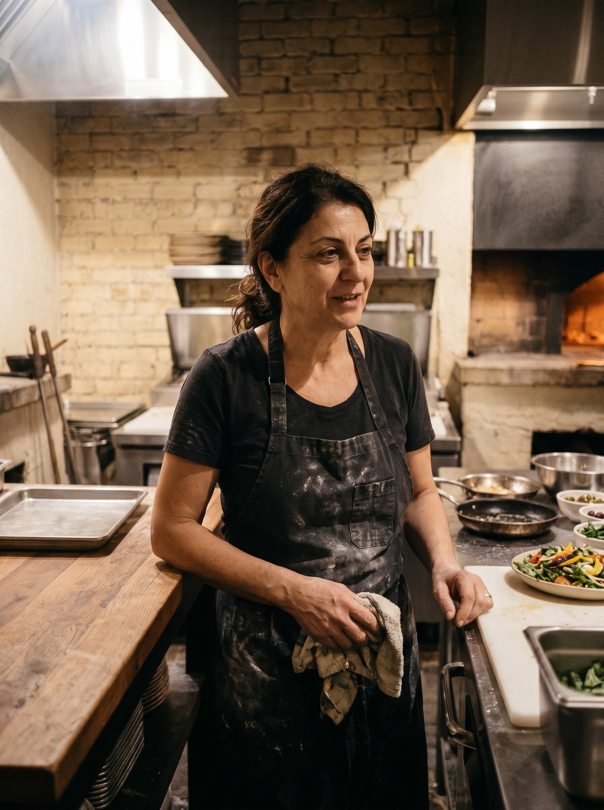
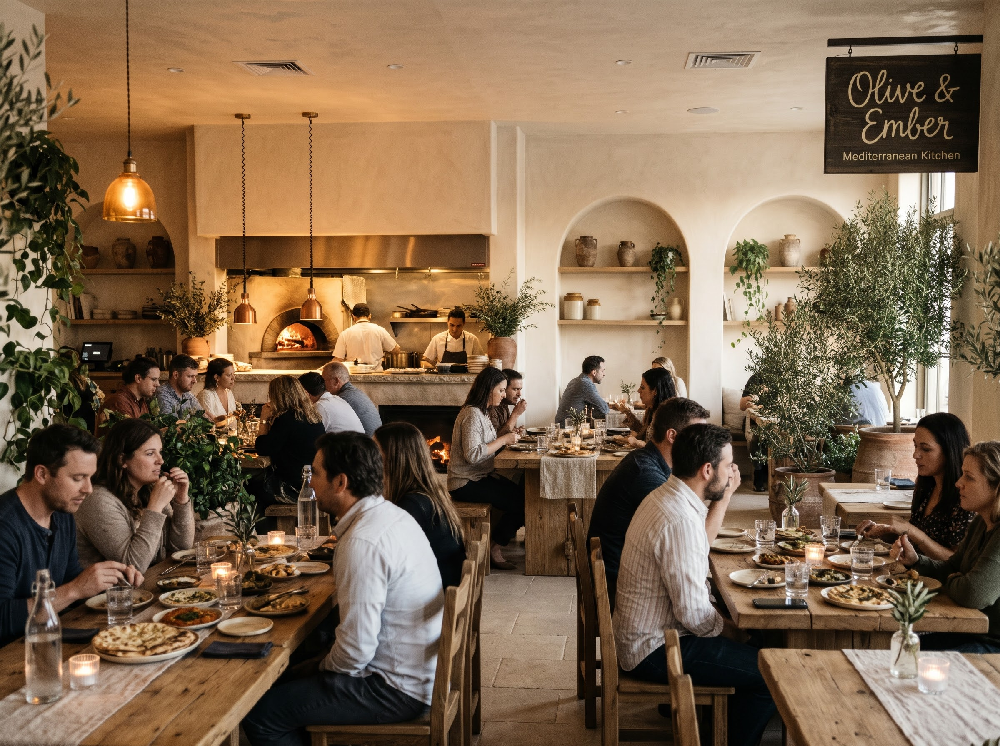
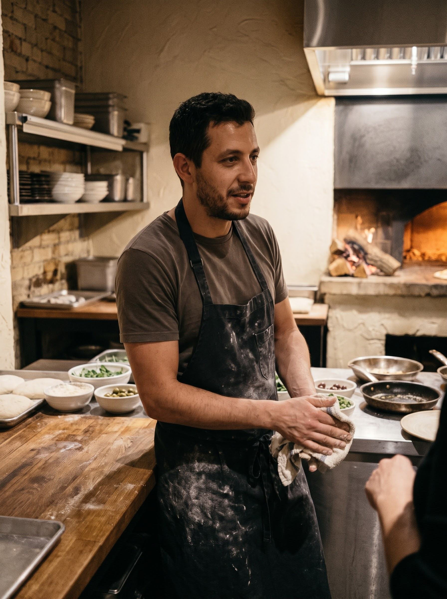
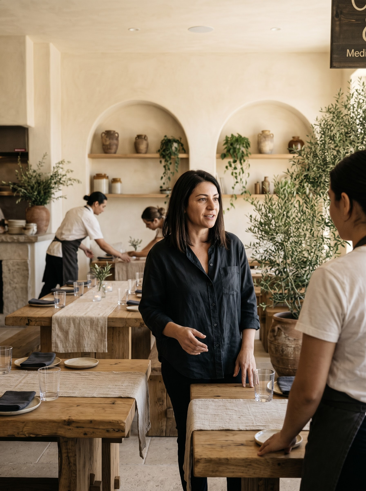
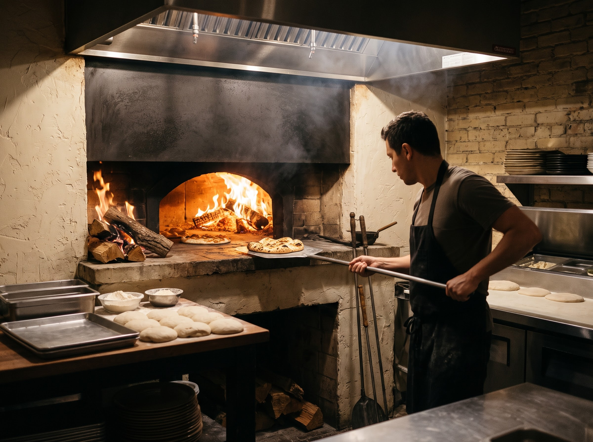
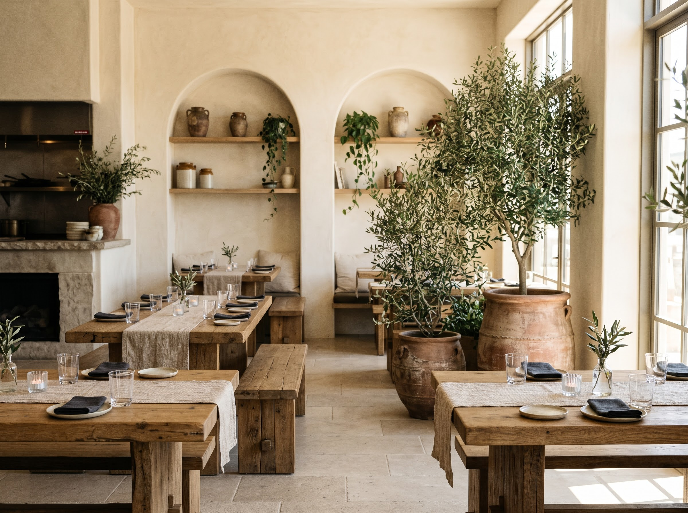
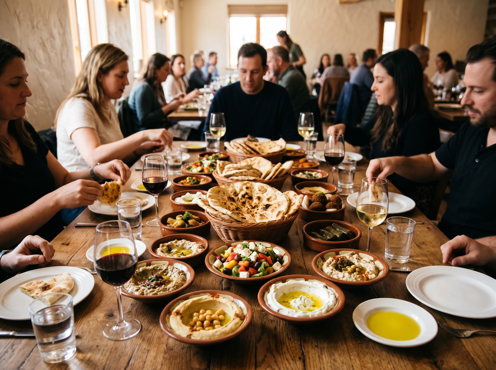
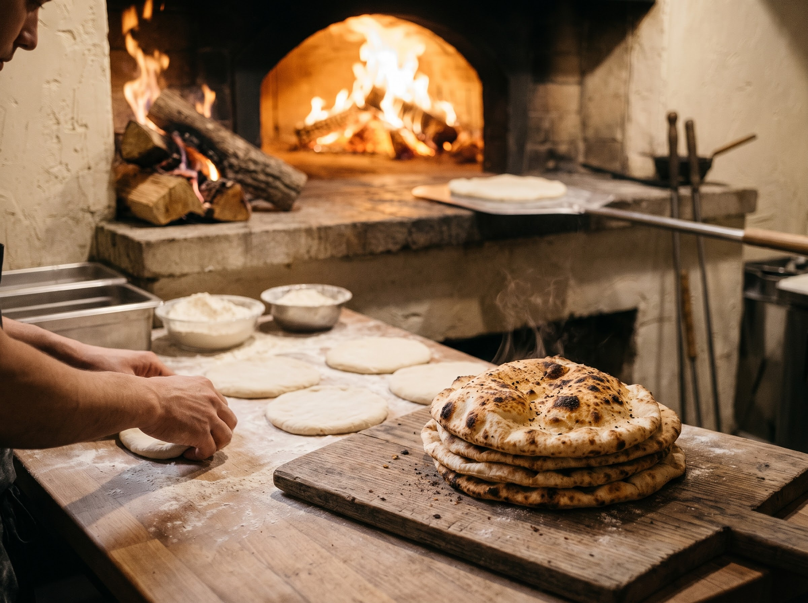

Eleni Vasilakis
Founder & Head Chef
Eleni grew up cooking beside her grandmother in a village on Naxos and opened Olive & Ember to bring those recipes to a neighborhood table.
Est. • Wood-Fired Mediterranean
Live-fire cooking and family recipes from the Greek coast, made to be shared around the table.
Olive & Ember started with a belief that the best meals happen over open fire, with plenty of time to talk. We cook from the coastal kitchens of Greece and Lebanon, using seasonal ingredients and doing as little to them as we can.
Every morning begins with lighting the stone hearth. By the time the doors open, the dining room smells of blistering pita, char-roasted eggplant, wild oregano, and warm spices. Stop in for a quick plate of mezze or settle in for a long feast. There is always a seat for you.


Founder & Head Chef
Eleni grew up cooking beside her grandmother in a village on Naxos and opened Olive & Ember to bring those recipes to a neighborhood table.

Sous Chef & Hearth Lead
Karim is first in every morning. He lights the oak and fruitwood fire and bakes the day’s first batch of pita.

General Manager
Marta runs the floor and chooses the wines, and she is the reason regulars get their usual table without asking.
We pour single-origin extra-virgin olive oil pressed from family-owned groves in Crete.
Our wood-fired stone oven gives our flatbreads, seafood, and vegetables a crisp char and a hint of smoke.
From whipped labneh and smoky baba ganoush to slow-braised lamb and honeyed baklava, everything is made in-house every day.
“The blistered pita straight from the stone oven is unreal. Our favorite spot for a relaxed family-style dinner.”
“Warm lighting, friendly staff, and lamb that falls off the bone. You can taste how fresh every mezze dish is.”
“From the Cretan olive oil to the wood-fired eggplant, it feels like a seaside getaway a few minutes from home.”



